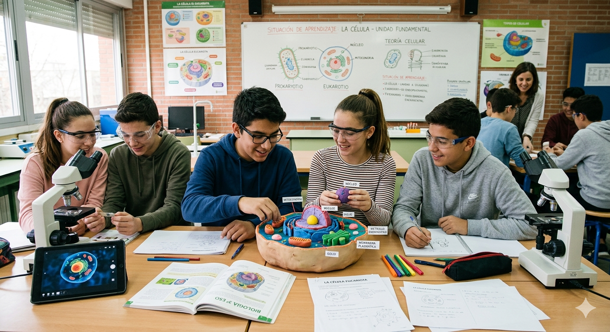

Explorando la célula

SdA: Viaje al interior de la vida: explorando la célula. Imagen generada con inteligencia artificial. Gemini/Uso educativo.
· Título descriptivo: “VIAJE AL INTERIOR DE LA VIDA: EXPLORANDO LA CÉLULA”.
· Centro de Interés o temática: Siguiendo los bloques de saberes básicos: “A. Proyecto Científico” y “B. La célula” de 4º ESO, según la Orden de 30 de mayo, de 2.023, se va a desarrollar una SdA con el título anteriormente indicado, cuyo centro de interés va a ser el concepto de célula, sus tipos, diferencias entre ellas y orgánulos celulares.
· Nivel al que va dirigido: 4º ESO. Esta propuesta de aprendizaje está diseñada para el alumnado de 4º de Educación Secundaria Obligatoria, una etapa en la que ya cuentan con los conocimientos básicos sobre la célula adquiridos en cursos anteriores. En este momento educativo, el alumnado puede entender procesos biológicos de mayor complejidad, como el ciclo celular, la mitosis y la meiosis, y también es capaz de aplicar el método científico en situaciones reales. Asimismo, muestran un mayor nivel de autonomía, lo que facilita la realización de prácticas de laboratorio con precisión, responsabilidad y capacidad crítica. Se trata de un curso idóneo para trabajar de manera conjunta la observación al microscopio, el análisis de resultados y la comunicación científica, impulsando así el desarrollo de competencias clave y de capacidad analítica y crítica.
· Temporalización aproximada: 3 sesiones. El proyecto se desarrollará a lo largo de 3 sesiones, combinando trabajo previo en casa, gracias a la metodología (Flipped Learning) con actividades prácticas en el aula y en el laboratorio. Además, emplearán herramientas digitales, dado que en nuestro centro disponemos de aula de informática y carrito con portátiles disponibles. Las sesiones quedan planificadas de la siguiente forma:
Sesión 1: Introducción y recordatorio de saberes básicos de la célula mediante la metodología Flipped Learning (visualización previa en casa). En clase se revisan los conceptos clave (célula, tipos, orgánulos, ciclo celular) y se presenta la práctica de laboratorio.
Sesión 2: Realización de la práctica de laboratorio, siguiendo el informe de prácticas aportado por mí como docente, donde el alumnado, en parejas, extrae células (mucosa oral y epidermis de cebolla), realiza las preparaciones y observa al microscopio, identificando estructuras celulares.
Sesión 3: Elaboración del informe de prácticas, mediante Canva, con el objetivo de mejorar su Competencia Digital y creación del podcast final, con Audacity, donde el alumnado expone sus conclusiones siguiendo el método científico.
Esta temporalización permite aprovechar el tiempo de aula para el trabajo práctico y favorecer un aprendizaje activo y significativo, donde el docente es guía de su aprendizaje, lo cual les motiva a aprender.
· Materia implicada: Biología y Geología. La materia implicada es Biología y Geología, centrada en el estudio de la célula como unidad básica de los seres vivos, concretamente en esta Situación de Aprendizaje. A través de este proyecto se trabajan saberes básicos como: tipos de células y sus diferencias, orgánulos celulares y sus funciones, ciclo celular, mitosis y meiosis, observación microscópica y método científico.
Además, se desarrollan competencias específicas como el trabajo experimental en el laboratorio, la recogida y análisis de datos, manejo del microscopio, la elaboración de informes de prácticas de carácter científico, así como la comunicación de resultados, de acuerdo al método científico.
· Idioma: Español. El proyecto se desarrollará en español, como lengua vehicular del centro. El empleo del castellano permite a nuestro alumnado: comprender los conceptos científicos con precisión, utilizar vocabulario específico de la materia, redactar el informe de prácticas, expresar de forma clara sus conclusiones en el podcast, etc. De este modo, se favorecen tanto la competencia científica como la lingüística, tanto de forma oral, como escrita, en un contexto académico y formal.
· Descripción general de lo que se pretende que el alumnado aprenda o trabaje: Se pretenden trabajar las competencias específicas 1, 3 y 4 de la materia de Biología y Geología, de acuerdo a los criterios de evaluación 1.2, 1.2. 3.1. 3.4. y 4.2., atendiendo a los saberes básicos relativos a la célula, sus tipos, diferencias, orgánulos celulares; para adentrarnos en las fases del ciclo celular, función biológica de mitosis y meiosis, así como sus fases y destrezas de observación de la mitosis al microscopio.
Para ello, el alumnado llevará a cabo una práctica de laboratorio previamente diseñada por mí como docente de Biología y Geología, en parejas y siguiendo el guion de prácticas facilitado, deben extraer células de la mucosa oral y células de la epidermis de cebolla, realizar las preparaciones y observarlas al microscopio óptico, identificando cada una de ellas y realizando imágenes de ello, las cuales incorporarán al informe de prácticas, que tendrán que realizar y cumplimentar, siguiendo el método científico. Podrán presentarlo empleando Canva. Finalmente, deben realizar un análisis final, a modo conclusión de la práctica, de forma expositiva realizando un pequeño podcast con Audacity, de aproximadamente dos minutos de duración, que deberán subir a la plataforma Google Classroom, para su evaluación.
· Justificación: El punto de partida de la propuesta será un Flipped Learning (en relación con la rutina de pensamiento) donde se trabajen los siguientes aspectos para un primer acercamiento, donde el alumnado pueda recordar los saberes básicos trabajados en cursos anteriores en nuestra materia:
o Concepto de célula.
o Tipos de célula. Clasificación y diferencias entre ellas.
o Orgánulos celulares.
o Fases del ciclo celular.
Tras su visualización, se trabajará en clase persiguiendo la consecución de las competencias específicas de la materia de Biología y Geología por medio de los saberes básicos de 4º ESO, que permitirán desarrollar, como se ha explicado en el apartado anterior, el producto final: la realización de la práctica de laboratorio de la extracción y observación de células al microscopio óptico, elaborando un informe de prácticas, siguiendo el método científico, que presentarán mediante Canva y realizando un análisis final a modo conclusión en versión digital, a modo podcast con Audacity, que editaran y subirán a Google Classroom.